Utilisé au Quaternaire (🦣 −2 Ma → −10 ka) : l'obliquité ε pilote la bascule glaciaire — ailleurs, effet global négligeable (±1 °C)

L'obliquité ε (l'inclinaison de l'axe terrestre, de 22,1° à 24,5° tous les 41 000 ans) ne change pas d'un iota l'énergie totale reçue par la Terre. Elle change sa répartition entre l'équateur et les pôles. C'est pour ça que son effet global paraît négligeable (±1 °C), alors qu'il décide des glaciations.
Le modèle intègre l'insolation journalière sur l'année entière et sur chaque bande de latitude (zones tropicale 0–30°, moyenne 30–60°, polaire 60–90°). Résultat, par degré d'obliquité en plus :
Cet écart d'énergie est converti en écart de température de zone par le bilan d'énergie de surface :
ΔT = ΔS · (1 − α) / B, avec α l'albédo (0,30) et B le coefficient de refroidissement
radiatif (2 W/m²/K, Budyko 1969). Les températures de zone ainsi corrigées décident si la neige de
l'hiver survit à l'été : c'est le seuil glace-albédo.
Conséquence, et c'est tout le sujet : une obliquité faible donne des étés polaires frais, la neige survit, la glace gagne, l'albédo monte — la glaciation démarre. Une obliquité forte fait l'inverse. Dans le modèle, au Quaternaire à 298 ppm de CO₂ : 22,1° → 6,2 °C, 23,44° → 12,1 °C, 24,5° → 14,5 °C. Deux états pour une même composition de l'atmosphère : le CO₂ et le méthane amplifient la bascule, ils ne la déclenchent pas.
Ailleurs dans la frise, l'effet existe mais reste marginal : sans calotte au bord de son seuil, redistribuer l'énergie ne fait pas basculer le climat. C'est pourquoi l'obliquité n'est pilotée dans le temps qu'au Quaternaire (🦣).
Références : Berger 1978 (J. Atmos. Sci. 35:2362) · Laskar et al. 2004 (A&A 428:261) · Budyko 1969 (Tellus 21:611) · Lisiecki & Raymo 2005 · Lüthi et al. 2008 (EPICA). Détail des entrées : popup 📚 Biblio de la page principale.